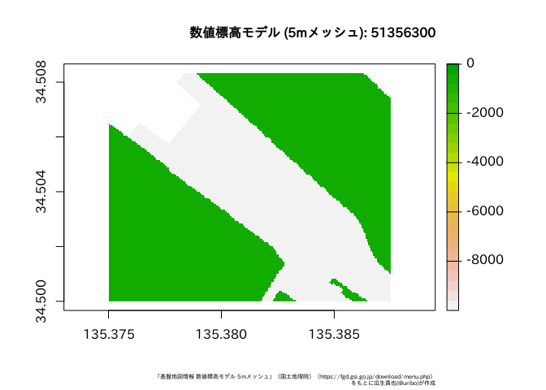

(Sorry, English version of README is not availavle for now.)


このパッケージは、国土地理院 基盤地図情報 (FGD: Fundermental Geographic Data https://fgd.gsi.go.jp/download/menu.php) からダウンロードしたデータ(バージョン4.1に対応)をR上で扱うためにデータの変換を行う関数を提供します。
Example
fgdrパッケージを使った、基盤地図情報データの読み込み方法を紹介します。
なお、fgdrパッケージでは、基盤地図情報のデータをダウンロードする関数は用意していません。読み込むデータは各自でダウンロードしてください。また、読み込んだデータの扱いについても基盤地図情報ダウンロードサービスの利用規約に従ってください。
このパッケージには、基盤地図情報データダウロードサービスが提供している
- 基本項目
- 数値標高モデル (5m, 10mメッシュ)
について、データフレーム、Rの地理空間データを扱うためのクラスであるsfまたはraster (stars)として返却する関数が備わっています。
基本項目
基本項目のデータはread_fgd()で読み込みます。この関数は対象のファイルの種類に応じて、自動的に地物の種類を判別して返却します。例えば、行政区画代表点 (AdmPt) では下記のようにポイントデータです。
#> Simple feature collection with 4 features and 8 fields
#> geometry type: POINT
#> dimension: XY
#> bbox: xmin: 133.783470941 ymin: 35.006967583 xmax: 133.873561494 ymax: 35.06012957
#> epsg (SRID): 6668
#> proj4string: +proj=longlat +ellps=GRS80 +no_defs
#> # A tibble: 4 x 9
#> gml_id type name adm_code life_span_from development_date org_gi_level
#> <chr> <chr> <chr> <chr> <date> <date> <int>
#> 1 K6_48… 郡市・東… 真庭市… 33214 2015-05-25 2018-07-03 25000
#> 2 K6_48… 町村・指… 美咲町… 33666 2015-05-25 2018-07-03 25000
#> 3 K6_48… 郡市・東… 津山市… 33203 2015-05-25 2018-07-03 25000
#> 4 K6_48… 郡市・東… 津山市… 33203 2015-05-25 2018-07-03 25000
#> # … with 2 more variables: visibility <chr>, geometry <POINT [°]>水域 (WL) はライン、行政区画 (AdmArea) はポリゴンデータになります。
#> Simple feature collection with 4 features and 8 fields
#> geometry type: POLYGON
#> dimension: XY
#> bbox: xmin: 133.75 ymin: 35 xmax: 133.875 ymax: 35.083333333
#> epsg (SRID): 6668
#> proj4string: +proj=longlat +ellps=GRS80 +no_defs
#> # A tibble: 4 x 9
#> gml_id type name adm_code life_span_from development_date org_gi_level
#> <chr> <chr> <chr> <chr> <date> <date> <int>
#> 1 K4_52… 町村・指… 美咲町… 33666 2018-07-02 2018-07-03 25000
#> 2 K4_52… 郡市・東… 真庭市… 33214 2018-07-02 2018-07-03 25000
#> 3 K4_52… 郡市・東… 津山市… 33203 2018-07-02 2018-07-03 25000
#> 4 K4_52… 郡市・東… 津山市… 33203 2018-07-02 2018-07-03 25000
#> # … with 2 more variables: visibility <chr>, geometry <POLYGON [°]>数値標高モデル
標高のメッシュデータである数値標高モデル(DEM) のデータはデータフレームまたはrasterとして読み込みます。対象のファイルが保存されているパスおよび数値標高データの種類を指定したread_fgd_dem()実行します。
5mメッシュ
#> # A tibble: 33,750 x 2
#> type value
#> <chr> <dbl>
#> 1 データなし NA
#> 2 データなし NA
#> 3 データなし NA
#> 4 データなし NA
#> 5 データなし NA
#> 6 データなし NA
#> 7 データなし NA
#> 8 データなし NA
#> 9 データなし NA
#> 10 データなし NA
#> # … with 33,740 more rowsデフォルトでは返り値のオブジェクトがデータフレームですが、これは引数return_class =によりrasterを選ぶことも可能です。rasterとして読み込み、可視化する例を示します。
par(family = "IPAexGothic")
plot(r)
title(main = "数値標高モデル (5mメッシュ): 51356300",
sub = "「基盤地図情報 数値標高モデル 5mメッシュ」（国土地理院）（https://fgd.gsi.go.jp/download/menu.php）\nをもとに瓜生真也(@uribo)が作成",
cex.main = 1,
cex.sub = 0.45,
adj = 1)
10mメッシュ
同様に10mメッシュのデータを読み込むにはresolution =を10に変更してください。
#> class : RasterLayer
#> dimensions : 750, 1125, 843750 (nrow, ncol, ncell)
#> resolution : 0.000111111111111, 0.0001111111112 (x, y)
#> extent : 140, 140.125, 36.0833333333, 36.1666666667 (xmin, xmax, ymin, ymax)
#> crs : +proj=longlat +ellps=GRS80 +no_defs
#> source : memory
#> names : layer
#> values : 5, 316 (min, max)ライセンス
MIT